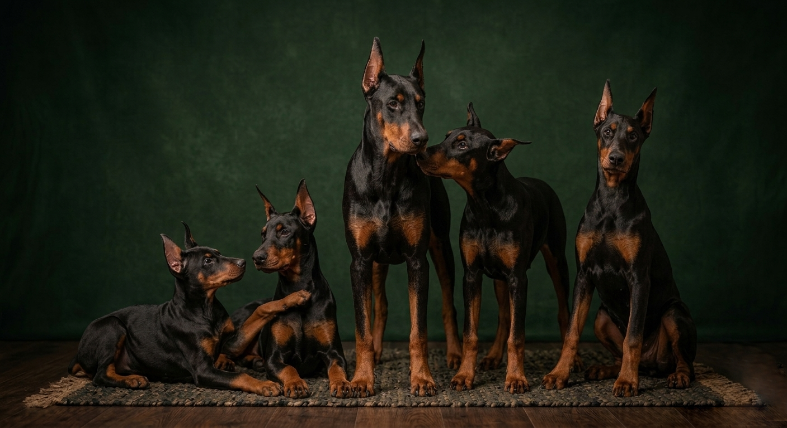

Doklady & zdraví
Pet pas, čip, očkování, odčervení, kupní smlouva a zdravotní karta rodičů.
Štěňata & vrhy
S každým štěnětem
Pet pas, čip, očkování, odčervení, kupní smlouva a zdravotní karta rodičů.
Průkaz původu ČMKU, oba rodiče registrovaní chovanci s výsledky zdravotních testů.
Krmivo na první dny, pelíšek, hračka a voňavý ručník s vůní sourozenců pro snazší přechod.
Připravujeme
 Plánovaný
Plánovaný
Podzim 2026
Kombinace výstavního chovného psa a fenky s výjimečnou sociální orientací. Očekáváme 6–9 štěňat v černohnědé i hnědé barvě.
Celé portfolio vrhu →Historie
 Uzavřený
Uzavřený
Jaro 2024
První vrh stanice Aurum Noctis. Narodilo se 6 štěňat – 3 psi, 3 fenky. Všechna štěňata odešla do prověřených domovů po celé ČR.
Zobrazit galerii →
UzavřenýPodzim 2022
Spolupracovali jsme s chovatelskou stanicí Nocturne. Ve vrhu bylo 5 štěňat, která jsou dnes aktivně vystavována a sportují.
Zobrazit galerii →Máte zájem o štěně z budoucího vrhu? Napište nám – rádi vás zařadíme na čekací listinu.
Kontaktujte nás